Everything answered, 8/11: the four cards below (all UP, dirt at your 0.30) and the TILE BOARD sitting (14 families approved, 3 killed). Nothing in this room asks you anything right now; the banner opens the board record.
ANSWERED 8/11 TILE BOARD — VERDICTS IN 8/11: you approved 14 families (475 tiles), 3 died. Tap for the record →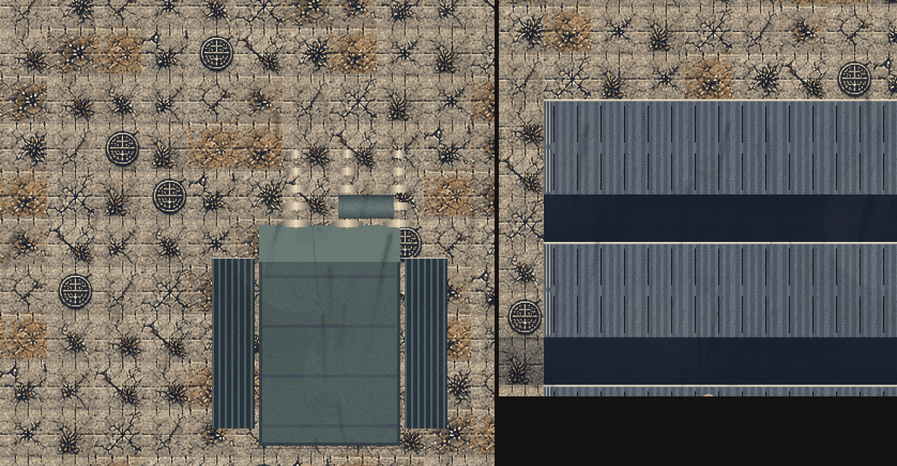
The two districts that ARE the electrical grid were rendering as featureless slabs - the substation was one flat block field, the battery yard one giant smear of metal. Measured first: the world lays the substation in real transformer bays with firewall spacing, and the battery containers in banks exactly five forty-foot containers wide. Now the substation yard stands its transformers - the green-grey tank with its sky-lit top, radiator fin banks down both sides, three porcelain bushings stacked on top, the conservator drum - with the switchgear lattice running between them, the busbar conductors sagging OVERHEAD (you walk under them), and pedestal insulators dotting the gravel. All of it clean and straight, because the network is the eerily perfect half of who owns power in this valley. Next door the battery yard subdivides into container rows - corrugated lids with lit rims, dark slots between, door ends with locking bars, the dead thermal units with their stopped fans - cold and streaked, because that yard died. Live frames: the transformer bay on the left, the container banks on the right.
TF-ART-019 · live in the game right now
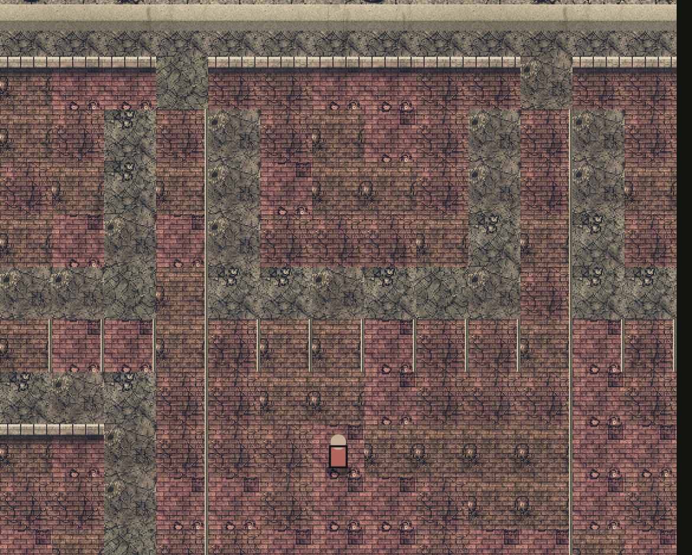
Two things at once, and the second is a confession. First, the civic buildings finished dressing: the courthouse draws its real precast panel seams on its own material (the world has named those joint cells all along - Clark County builds precast, so that is what your courthouse is), the chapel arcade stands its pale stone columns and keeps its dead leaded stained glass, and the dome, clerestory, oculus ring and the terminal curtain wall all wear dead dark glazing in thin steel mullions. Second: while wiring that, I found the courthouse was BLUE because of my own bug from the court-lines pass four days ago - the code matched any name containing "court", so the courthouse, the chapel memorial court, the industrial truck court, the library courtyard and the mall food court, nearly eight thousand cells, were all painted like basketball courts, and my composition audit missed it because it only walked the sports districts. Fixed at the root: only real sport-court names get acrylic now. Live frame at the courthouse wearing brick and seams instead of tennis blue.
TF-ART-007 · live in the game right now
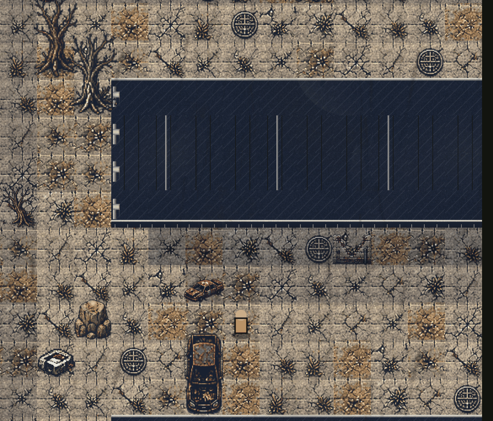
The most recognisable industrial silhouette in the Mojave was drawing as a housing tract someone shrank - hundreds of little stucco wall squares standing on dirt. Now the solar farm is ranked panel tables: long near-black glass planes tilted at the sun, the galvanised back rail catching light on the high edge, the lit front lip over the deepest shadow in the district, torque-tube stubs with their one honest rust streak at every table end, and the pad-mount transformer cabinets standing on their poured pads. It is the largest light-against-dark contrast in the game and you can read the ranks from the next district over, which is the point of a landmark. And it is CLEAN - straight frames, an even dust haze, nothing sagging - because this plant still runs while the world around it is dead, and that is supposed to feel wrong. The battery yard next door is the other half of that story: its inverter racks are cold dark cabinets, one in seven hanging open and gutted, oil stains at their feet. Two power districts, one alive and eerie, one dead and looted. Live frame standing in the solar ranks.
TF-ART-016 · live in the game right now
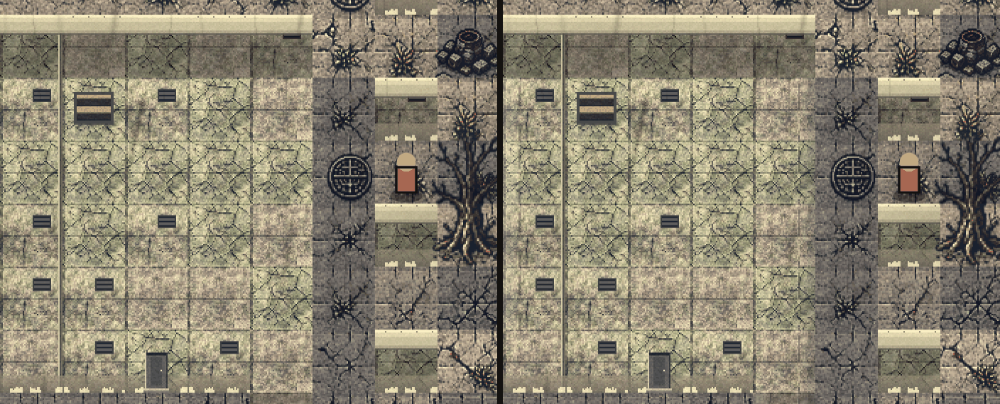
Until today every building in the valley was a cardboard flat: its vertical edges were lit and shaded strips that never turned, and a window was a picture pasted on the wall. Now the edges turn a second plane - a real 12-pixel return past the corner, which is exactly how thick a Clark County wall measures at this scale - with the value step that makes two planes read as two planes, and the one crack a thirty-year Vegas corner actually carries: the corner bead rusting inside the stucco, dead straight down the edge, with its little rust bleed. The windows became HOLES: a shaded jamb one side, a lit one the other, the soffit over the opening reading darkest the way a real underside does, and the only water stains a desert wall gets, starting at the sill corners and nowhere else. The whole thing is pure light-and-shadow geometry riding on top of whatever material the building already wears, so every house skin you approved and every civic material gets its thickness from one set of pieces. Houses, warehouses, the jail, everything with a corner. Live frame at the jail, before on the left, after on the right. SECOND SLICE 8/20: the INNER corners are in - where a building wraps around a pocket (the storage unit rows, the radio yard, thirty-five districts), the edge reads as the wind-eddy shade wedge with silt drifted into its foot instead of a sun-lit open corner, because the last place the sun reaches is where the wind drops its grit.
TF-ART-017 · live in the game right now
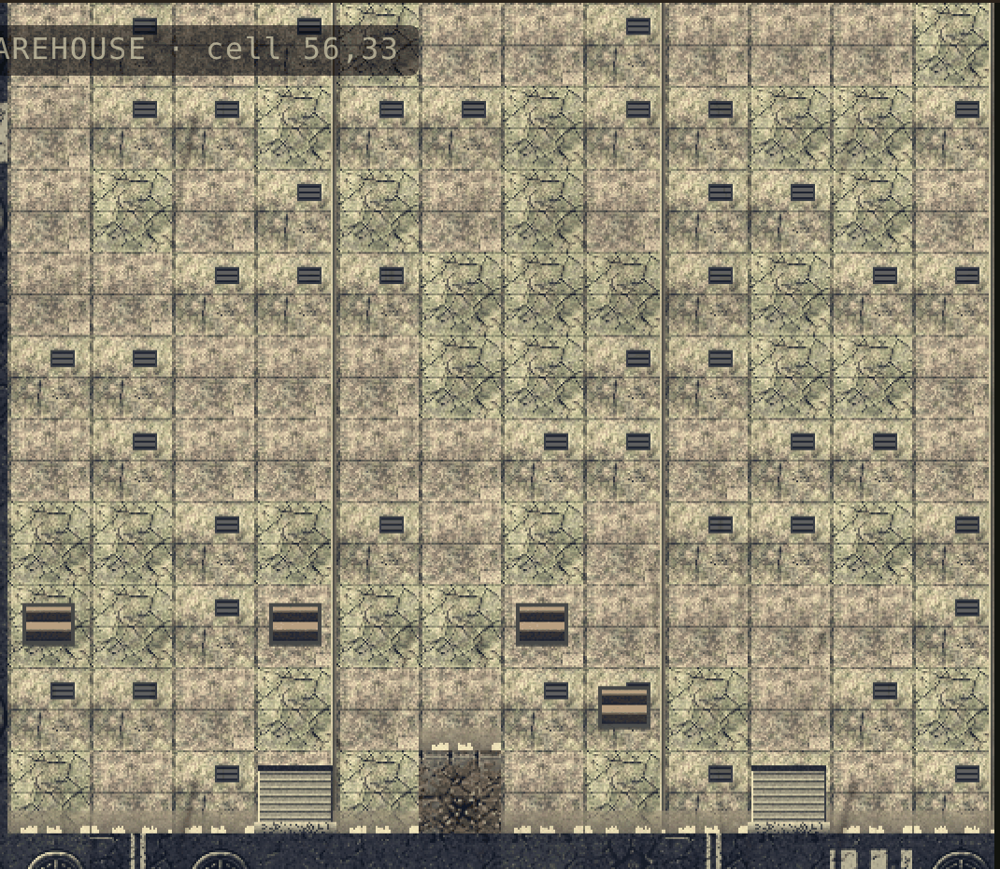
The civic and industrial masses have worn real tilt-up concrete since 8/3, but it read as a repeating texture, which is exactly what tilt-up is not: a real one is BIG BLANK FIELDS PUNCTUATED BY JOINTS, because the panels were cast flat on the slab and lifted into place one by one, and you can read that construction method off the finished building. Now every tilt-up mass draws its caulked joint every four to six columns (each building rolls its own rhythm and the joints never swim), the poured cap runs as its own top course, the plinth at grade carries the pale mineral bloom concrete grows at its foot, rain weeps streak down the field (dust and UV only, never green - this is the Mojave), and the odd punched window is boarded over with the same weathered ply the shopfronts use. Warehouses, the jail, the hospital, downtown podiums, the convention hall - every building the world builds out of tilt-up. Live frame at a warehouse: joints, boards, bloom.
TF-RUN-005 · live in the game right now
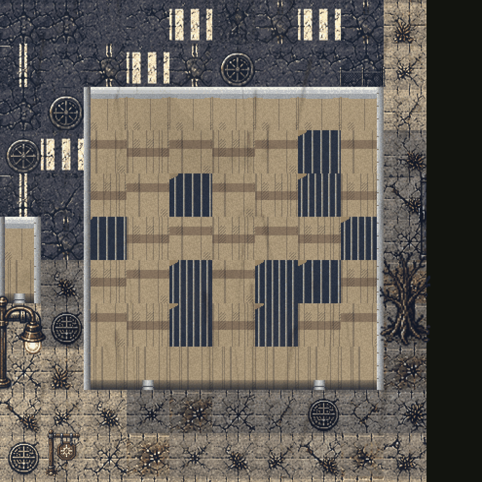
Vegas landmarks ARE its signs, and until today every one of them rendered as a plain brick box. Seven sign surfaces the world already named now draw as real dead signs: the commercial PYLON (bleached cabinet, panels blown out to the bare fluorescent tubes, standing on its steel legs), the swap meet market pylon, the school and drive-in MARQUEES (crazed letter boards, the shadows of gone letters still on the plastic, never a readable word - the words are yours), the drive-in SCREEN TOWER (a giant torn bleached screen, the steel lattice showing through the holes), the stadium SCOREBOARD (a dead bulb matrix with panels out), downtown BLADE SIGNS jutting over the sidewalk on their mounting arms, and the police station ROOF ANTENNAS and DISH. Faces harvested from your approved dead-signband plastics and street concrete, steel from the approved galv parapets and rail plates. Everything dark, because in act 1 nobody is buying. Live frame at the commercial pylon. The truck stop price pylon wires itself the day a truck stop generates.
TF-WORLD-010 · live in the game right now
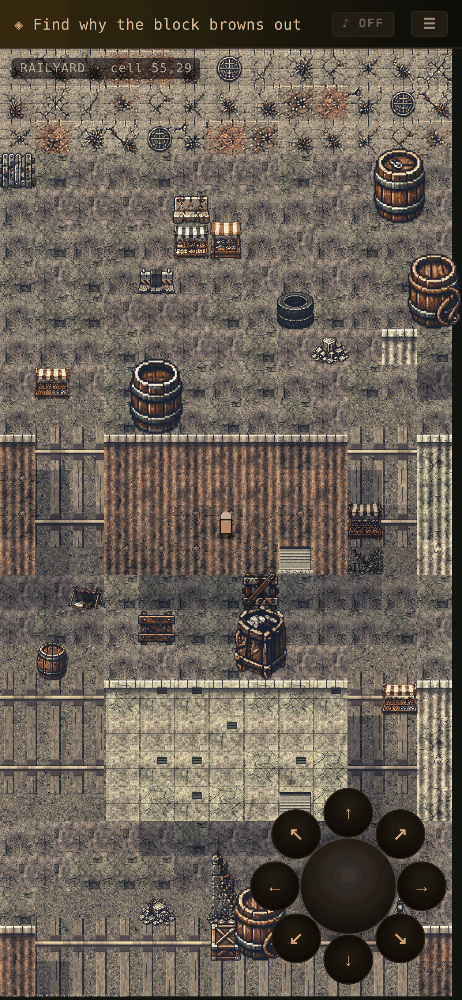
The classification fan draws your approved ties, rails and ballast plates now. VOLUME 8/16: the tracks END like tracks now - measured first: 517 east and 517 west ends in the yard, so a thousand steel stops would be a lie. About one end in four keeps its rusted BUFFER STOP and the rest sink under thirty years of blown sand, one rail tip still showing. Live frame at a buffered end. Turnouts and the level crossing wait on world geometry that does not exist yet (no through mainline, no road ever meets a track).
TF-ART-010 · live in the game right now
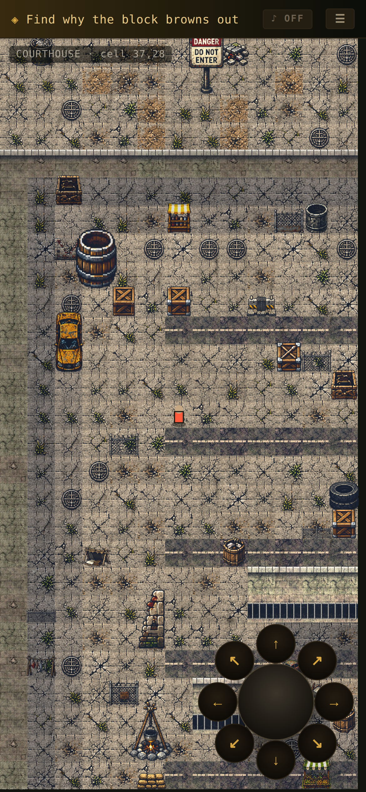
Courthouse, commercial, chapel, industrial, warehouse and downtown lots draw your washed stripes, each cell reading the painted line’s own shape. Live frame from the courthouse lot. The medical lot names whole bays, not lines, and is left alone on purpose.
TF-ART-003 · live in the game right now
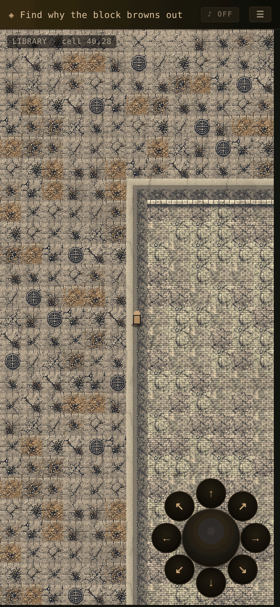
Downtown, chapel, courthouse and library building tops wear your coping ring: oxide downtown, bone on civic, turning its corners. VOLUME 8/15: the DEAD MECHANICAL is on the roofs now - your approved AC units (small and large), roof hatches, drain sumps and the odd pulled panel sit on the flat gravel, the south parapets drain through scuppers, and sand drifts pile against the north and east walls of the galvanized roofs. Live frame on a commercial roof, dead unit standing on the gravel.
TF-ART-012 · live in the game right now
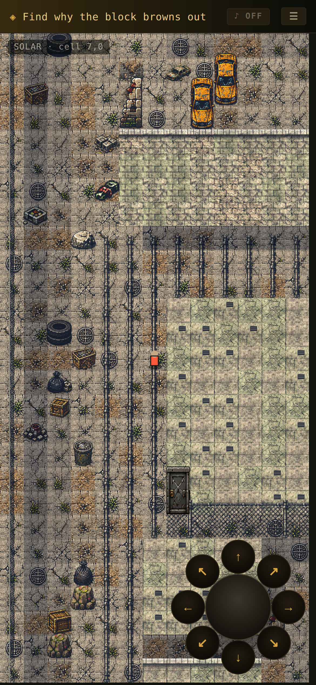
Thirteen districts that name their fence lines (solar, storage, battery, landfill, boneyard, radio, the trailer park and more) now draw see-through chain-link: the mesh shows the world behind it, posts land at corners and junctions, and about one segment in seventeen is breached. One fence line wears one style. VOLUME 8/14: the runs have GATES now, your approved gate pieces from the same bank, shut, sagging or hanging open, about one pair in thirteen, because every real lot has a way in. VOLUME 8/15: the whole wardrobe is on - the security yards (storage, battery, substation, arsenal, fort, airbase, radio, reclaim) run BARBED and RAZOR wire on top, the trailer park and swap meet run privacy SLATS, and the desert blows TRASH into the mesh with the odd section LEANING. 8/17: the world names its own REAL entrances (gate + curb cut cells on the fence lines) and every one now stands as a single wide OPEN gate - leaf hung at the end post, driveway ground through the mouth - where the world says the entrance is, not where a dice roll put it. Live frame at the battery yard, gate in the run. The jail keeps its razor-wire wall; that is a different object.
TF-ART-004 · live in the game right now
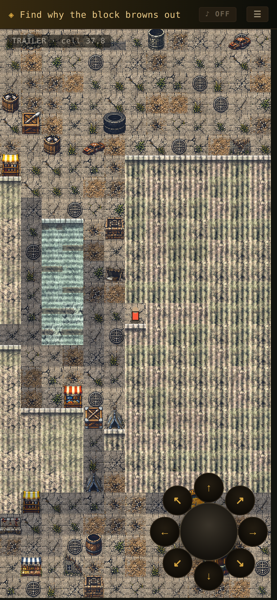
The mobile homes wear your park colourways now: ribbed cream, white and that faded turquoise, one colour per home with its stripe course. VOLUME 8/14: every home wears its SKIRT, the panel band at grade with the odd vent and missing panel. VOLUME 8/15: the BURNED ROW is in - about one home in six is a whole charred hull, because a post-crash park has its dead - and every home keeps its TOW HITCH on the tongue end, because a single-wide never loses it. Live frame in the park: a live home, a burned neighbour, skirts and hitches. Awnings are the last piece of this family still coming.
TF-ART-013 · live in the game right now
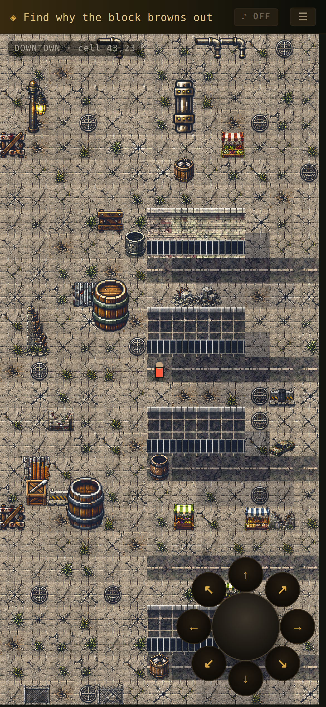
The oldest buildings (downtown, chapel, school, courthouse, library, commercial) can wear your painted-over ghost brick now: whitewash with the old wall bleeding through, above the dead storefront glass. Live frame downtown.
TF-ART-009 · live in the game right now
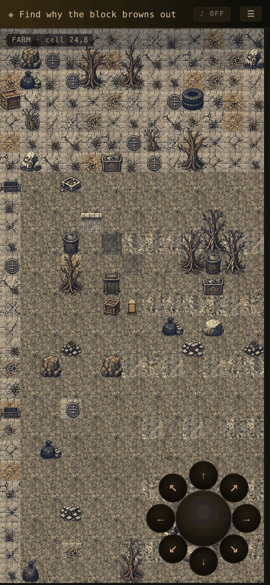
The farm names its own ground and now draws your family on it: fallow soil across the plots, furrow rows where crops once ran (each plot holds one furrow style), silted earth in the dead irrigation channels. These were the cells left deliberately blank by the props pass, waiting for the right family instead of getting dressed wrong. Live frame in the farm. Field edges, berms and the dirt track are coming as volume.
TF-ART-014 · live in the game right now
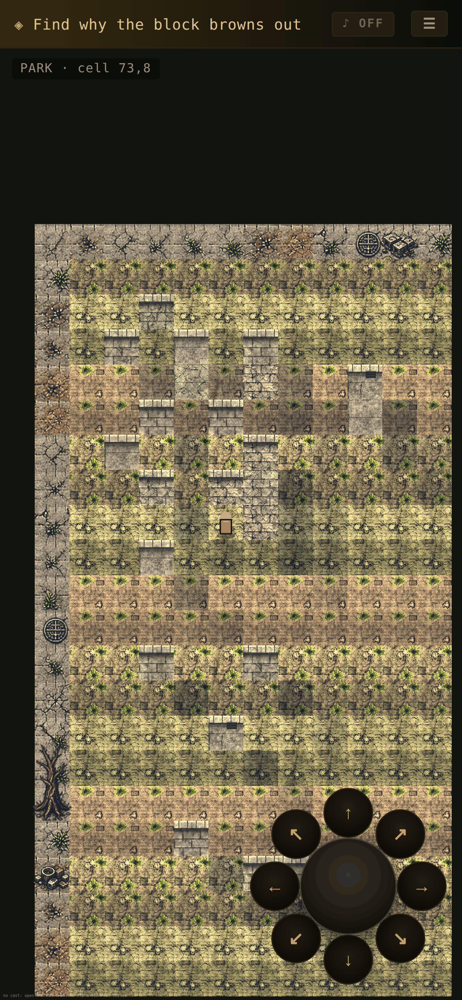
Every dead lawn in the valley draws your turf now: the park (three thousand cells of it), the school field and the stadium turf, with the old mowing stripes still readable in the dead grass. Courts, tracks, infields and bunkers key on their own names. VOLUME 8/15: the PAINTED LINES are on - the courts wear their ghost line ring (thirty years of wash, nearly gone, still legible) and the running tracks run their faded lanes where the ring is thin. SECOND PASS 8/15: the stadium names its own yard lines (field-markings cells) and they draw the chalk-line network now, joined cell to cell, stubbing out where the world says they end. Live frame at a park court, ghost lines on the blue acrylic.
TF-ART-005 · live in the game right now
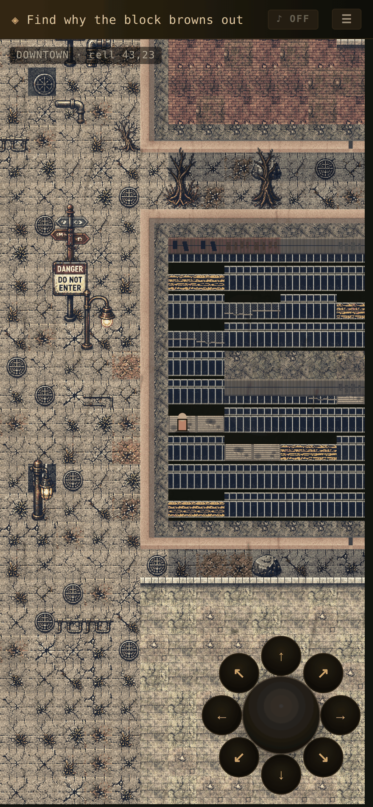
Downtown storefront faces draw your family now: dead dark glazed bays with boarded, shuttered and grilled fronts mixed in real segments, and nothing glows because power is territory. The first hunt for this one stood at the awnings by mistake; the glass was here all along. VOLUME 8/15: the DEAD SIGNBANDS are up - the fascia above every shopfront, painted-over or showing ghost letters where the channel cans were salvaged (the letters kept the sun off the paint, so the silhouettes read darker), the odd dead can still hanging skewed. Cooked from the family palette, never lit, never a readable word - the words are yours. SECOND COOK same day: the PILASTERS divide the block into real bays now (masonry piers, full height, the band runs between them) and the SMASHED FRONTS are in - about one shop in thirteen has its street-level pane GONE, black void, shard fringe, glass grit at the sill, because thirty years ago people went through these. Only glass smashes; boarded and shuttered fronts were already sealed. 8/17: the AWNINGS are up too - the world has always named its awning cells on the pass-under layer, and the south-facing fronts now hang your approved tattered drops (rust, teal, sand stripe, sage - one colourway per shop run), dead fabric drooping against the glass, and you WALK UNDER them with the fade already working. 8/18: the SIDE-FACING runs got their own cooked ribbons (fabric colours sampled from your approved drops), so every awning in downtown hangs now, whichever way its shop faces - sagging scalloped fabric, support arms, tears showing the sidewalk through. Live frame downtown: bands, piers and a looted bay in one street. Every volume item the form named is in the game.
TF-ART-008 · live in the game right now
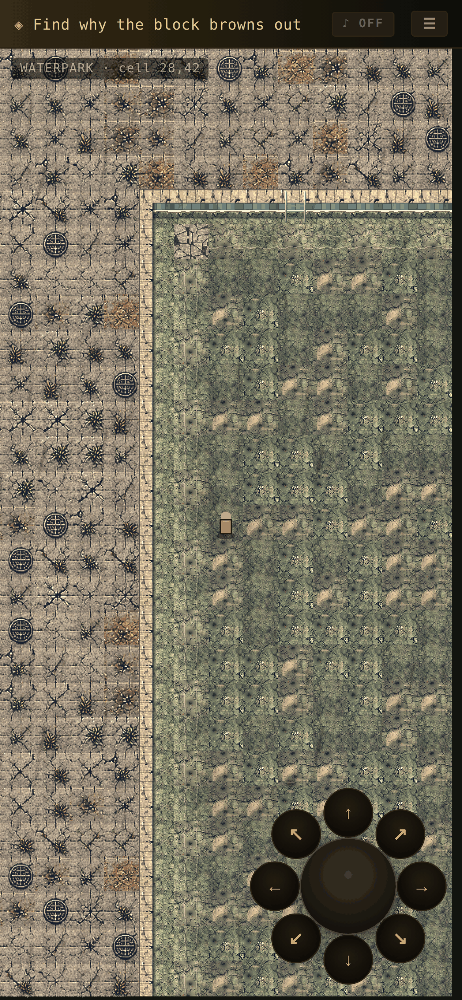
The waterpark wave pool, the splash pool and the apartment pools are real drained basins now: silted cracked floors, the coping rim stepping around every shape of the basin, the old blue tile waterline still on the back walls, a drain here and there. VOLUME 8/15: a pool floor is not flat any more - the middle of every big basin is the darker DEEP END and the shallow floor descends to it on real slopes, because luminance is geometry. Live frame at the wave pool, deep end reading dark. The rain-state wet deeps and the reclaim clarifier still wait (weather and world).
TF-ART-006 · live in the game right now
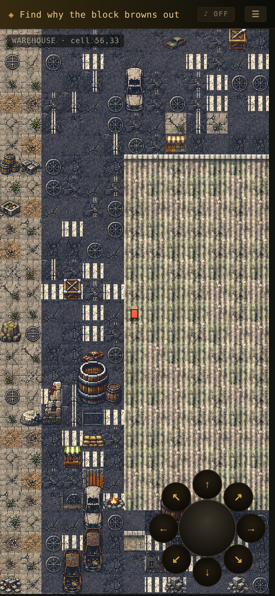
Ten industrial districts pick from your corrugated skins now: bare metal with rust runs, and three real paints. One material per building so nothing patchworks. Live frame in the warehouse district.
TF-ART-002 · live in the game right now
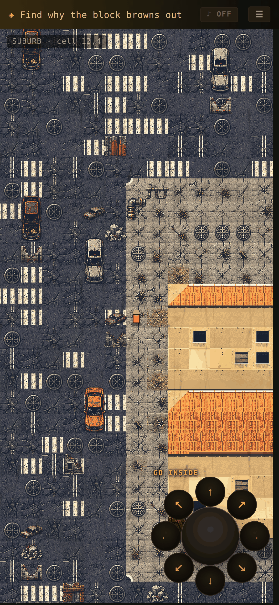
The kerb is the single most repeated object in the valley and until today it only ever ran dead straight. Now it turns: at every suburb street corner the cap arcs a real quarter turn around the road, built from the approved street pixels and matched to the straight kerb runs beside it. SECOND PASS 8/17: the DRIVEWAY DROPS are in - every suburb driveway that meets the street wears its dropped kerb lip now, half height across the mouth, flaring back to full kerb at each end. Live frame at a driveway mouth on the street. The crossing ramps stay banked until the world names a crossing landing.
TF-ART-018 · live in the game right now
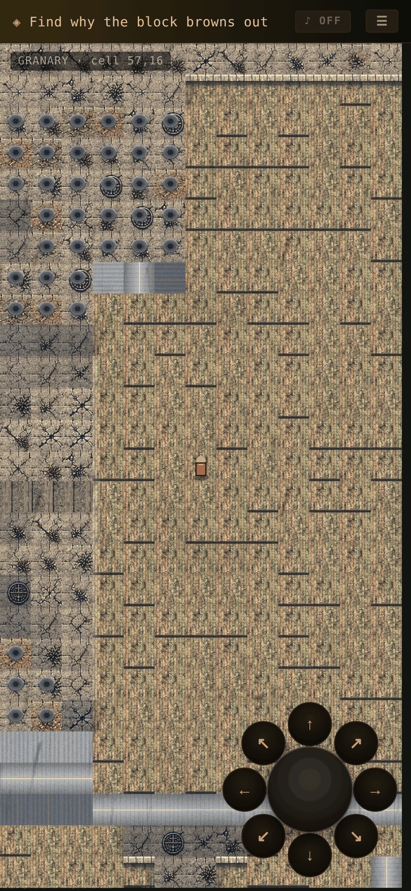
The grain elevator named 1,514 spout and dust-bin cells and they all drew dirt. Now the silo bases carry their cyclone dust collectors (squat steel bodies, lit rim, the cone falling to a dark throat) and the rail-spur side hangs its loadout spouts - the boom arm, the dark drop mouth, and the pale grain-dust bleach still on the concrete under each one after thirty years. A cell beside the spur gets a spout; everywhere else gets a cyclone. Steel from your approved galv, rust from the approved rail plates, all standing on the apron’s own concrete. Live frame at the granary. The gallery and headhouse are the district’s next names.
TF-ART-021 · live in the game right now
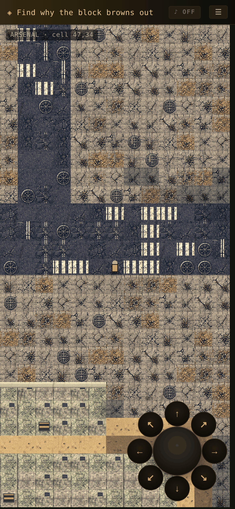
The arsenal named 1,607 barricade-post cells across its storage ground and drew gravel. Now they stand as post-and-cable vehicle lines, the way a real ammo depot controls movement between its magazine rows without walls (blast safety wants open ground): short concrete-filled posts, half of them rusted through, strung with one sagging steel cable that joins seamlessly from cell to cell. Lines march between the berms and traverses, denser at the issue points, exactly where the world placed them. Live frame at the arsenal beside the new berms. Hawthorne, the real Nevada ammo depot an hour from Vegas, is the reference.
TF-ART-022 · live in the game right now
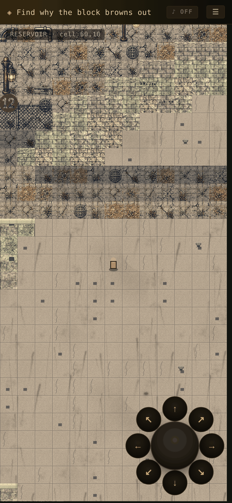
The reservoir named 1,434 valve and hatch cells and every one drew dirt. Now the tank pad ring carries its round steel access lids (a real ellipse from the 45 view, hinge bar, rust weep on the old ones) and the buried transmission mains march their two-leaf vault covers through the setback - pale concrete collars, dark steel leaves with the centre seam, the way a service line actually reads from above. A lone cell is one lid; a cell in a corridor wears the vault on the run’s own axis. Steel from your approved galv roofs, rust from the approved rail plates, collars from the approved kerb concrete, everything riding on the pad’s own bought concrete. Live frame at the reservoir. Tank roofs, overflow channels and the mains themselves are the next names on this district’s list.
TF-ART-020 · live in the game right now
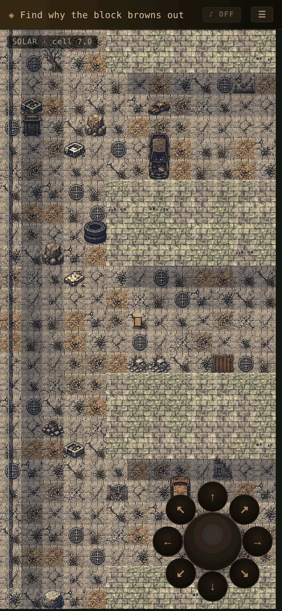
The plain concrete-block buildings (the unremarkable ones: solar, terminal, every district without a fancier material) finish properly now: a smooth poured cap beam runs the whole top course of the wall, and the odd vent block sits low in the courses. The orange starter parapet dies on these walls; the cap IS the top. VOLUME 8/24: THE ARSENAL BERMS - the twelve ammunition igloos each sit inside an earth berm ring the world already named, and it drew as a plain tan road until three looks proved what it was: a ring two cells thick, so it reads as a RIDGE now - lit flank, shaded flank, scrub and graded-earth mottle, the way a blast berm looks from above after thirty years. The concrete headwall and blast-door pieces are cooked and waiting in the bank for a shape that has a face; a berm has no headwall. Live frame at the arsenal, the ring around an igloo block.
TF-ART-001 · live in the game right now
Tap the picture. Does the game look better with the light on?
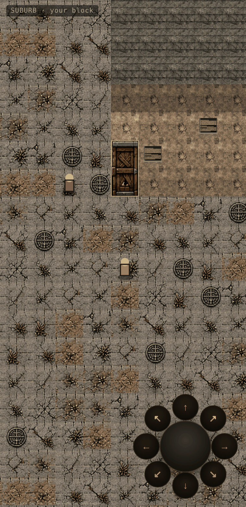
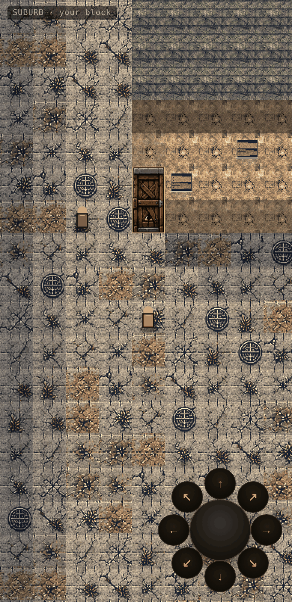
The whole game was using 110 of 255 brightness values and 0.0% of its pixels were cool. Everything was the same colour and the same brightness, which is why you could not see any of the texture work. Now the bright things take the sun and the dark things take the sky, which is blue.
brightness range 106 → 144 · contrast 31.7 → 42.5 · cool pixels 0.1% → 8.9%
Tap the picture. Do the buildings sit on the ground now?
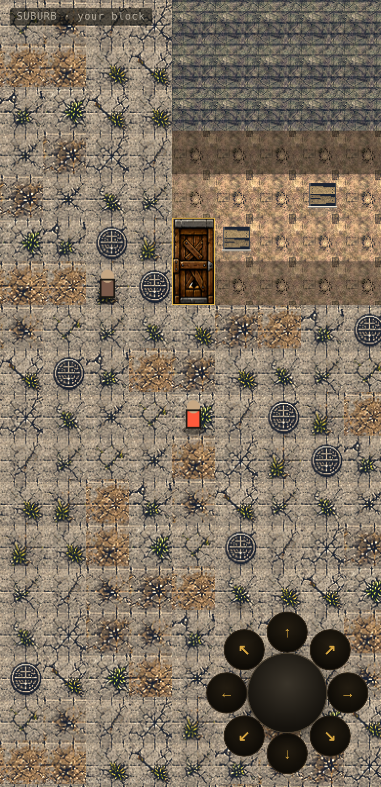
Nothing in this world threw a shadow, so every building sat on the dirt like a sticker on paper. Now every wall and every house drops a shadow down and to the right, the same direction the light in your tiles already comes from. It goes blue instead of black so your bought texture still shows through it.
47 ground cells in shadow in this frame · 0 before
Tap the picture. Does the block look like a place people left?
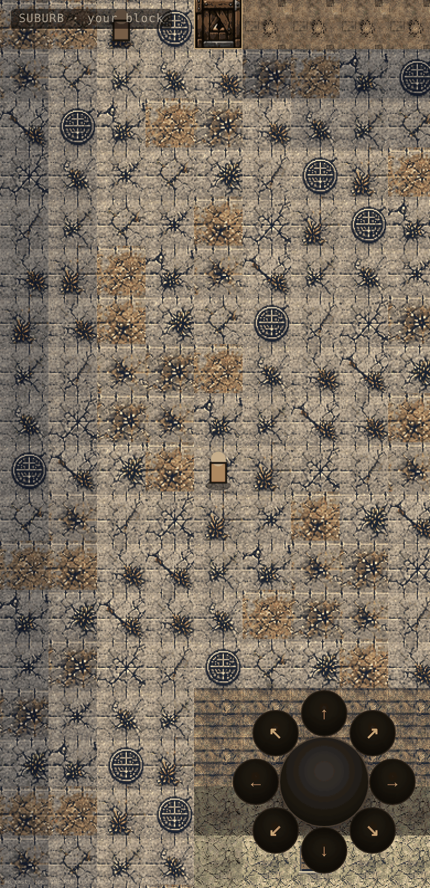
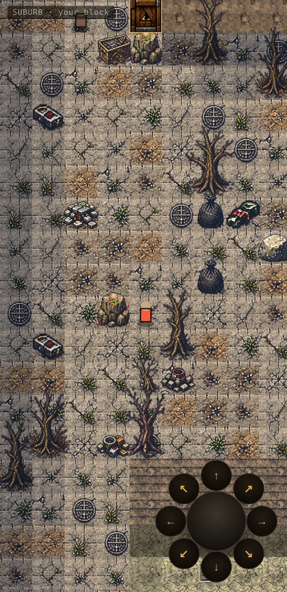
You bought 8,674 HD tiles and swept 2,604 of them by hand on 7/13 -- 1,927 thumbs up. NOT ONE had ever drawn a pixel. One session took the 465 that go indoors and put them in rooms and stopped at the front door, so the entire valley had zero objects standing in it. That is why it looked empty, and it was never about texture. Your own thumbs picked this vocabulary: rocks 100 up and 0 down, dead trees 47 up, LIVING trees 0 up and 23 down. It is a dead valley because you said so.
126 objects you already approved · every built district now dressed: downtown 663 · stadium 553 · suburb 529 · gated 513 · farm 496 · warehouse 459 · railyard 404 · solar 421
You picked SOME (0.30) on 8/9 and that is what the game ships now. The dial stays here to look at, not to re-answer.
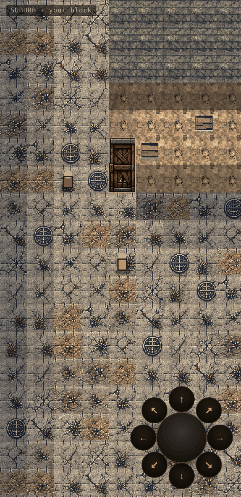
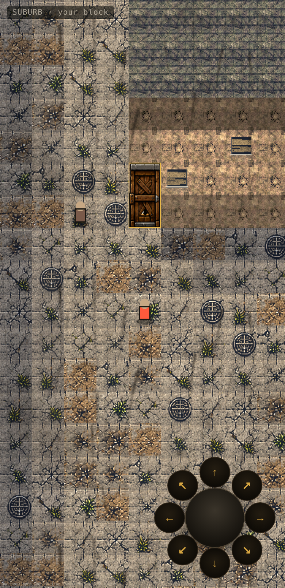
One grime pass over everything is the Machine Party trick you liked: it blends separate objects into one world instead of a pile of different art. Your 8/9 verdict picked 0.30 and noted "dirty can be good too" - 0.30 is live in the game, and 0.55 stays on the shelf as interest, not a ruling. Say the word if you ever want it turned up.
RULED 8/9: ships at 0.30, your pick · verdict in records/